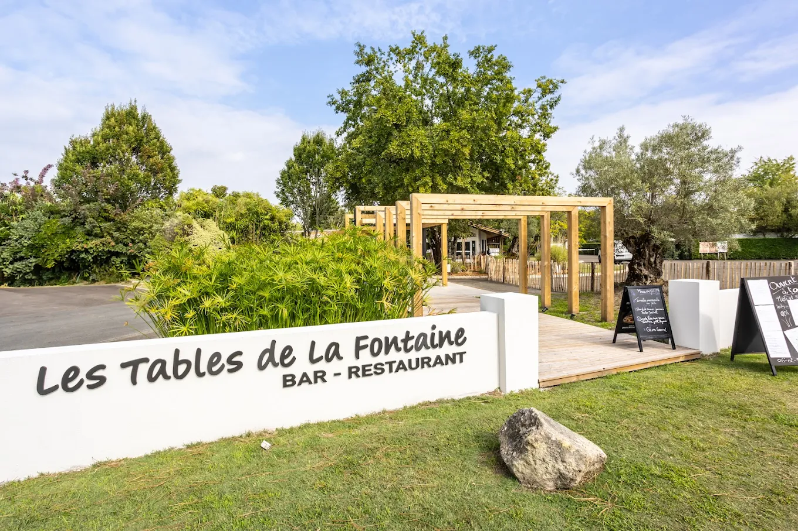
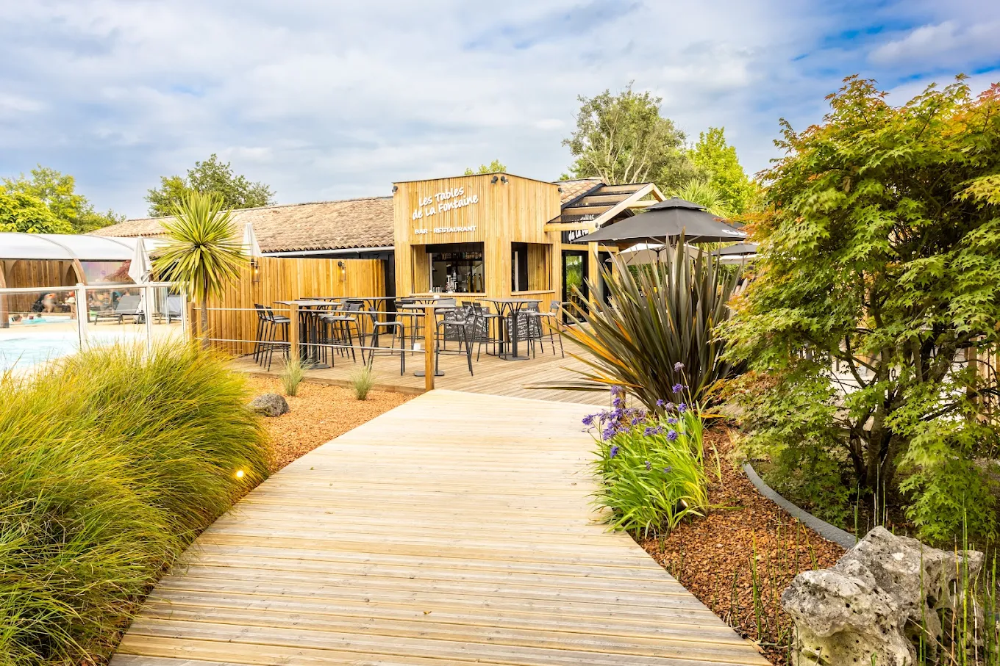
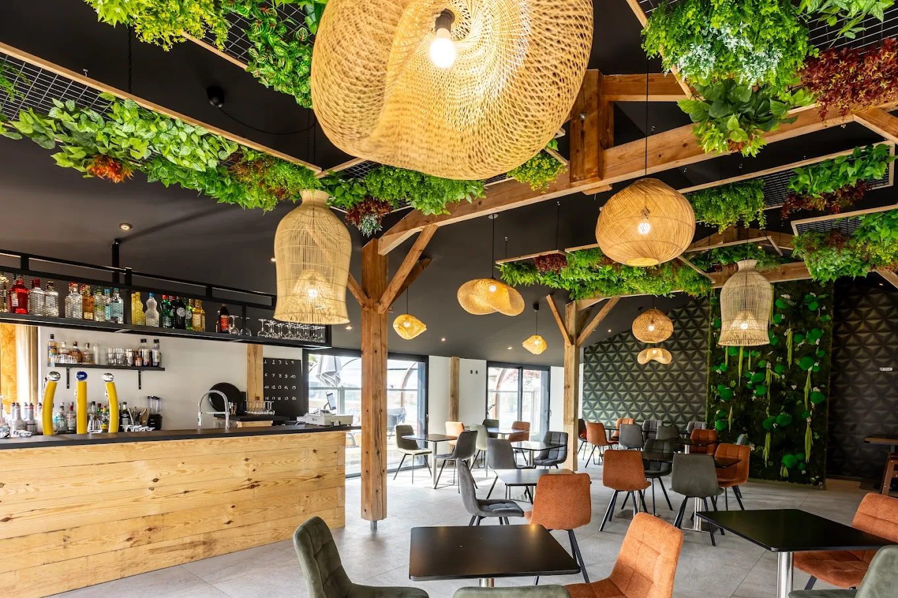
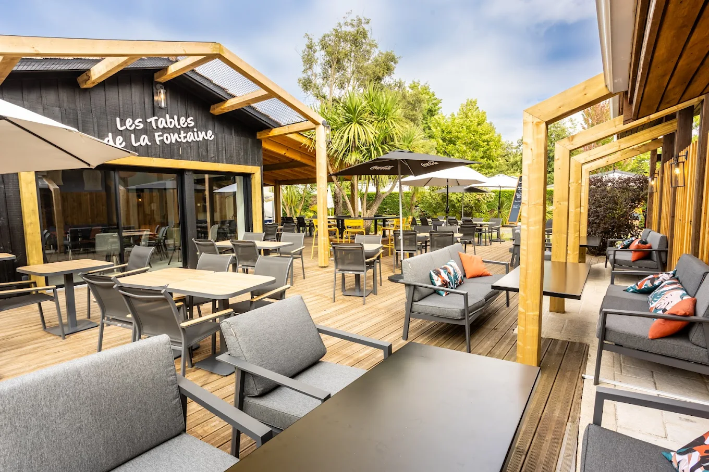
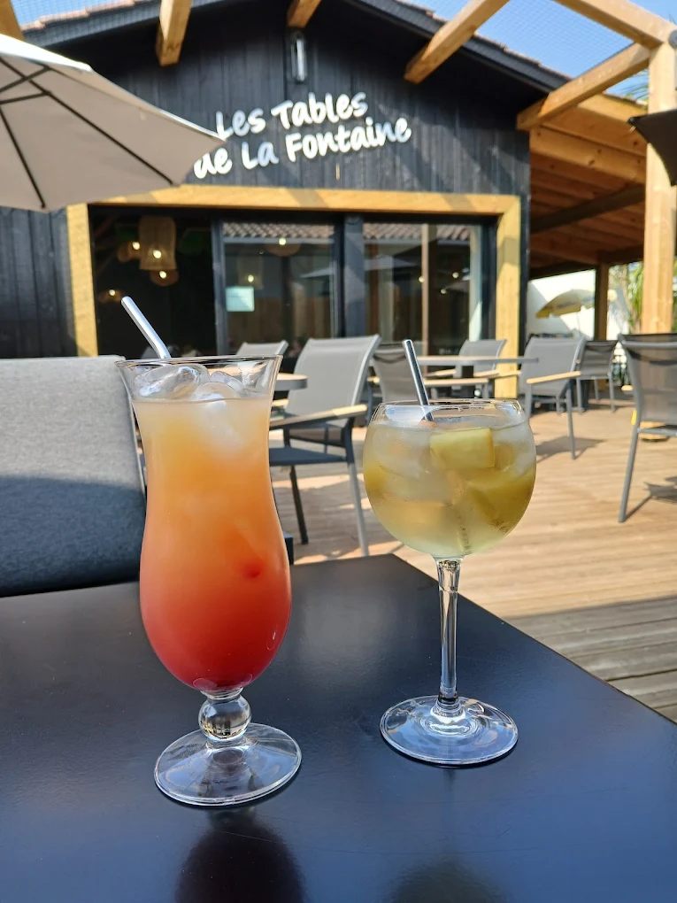
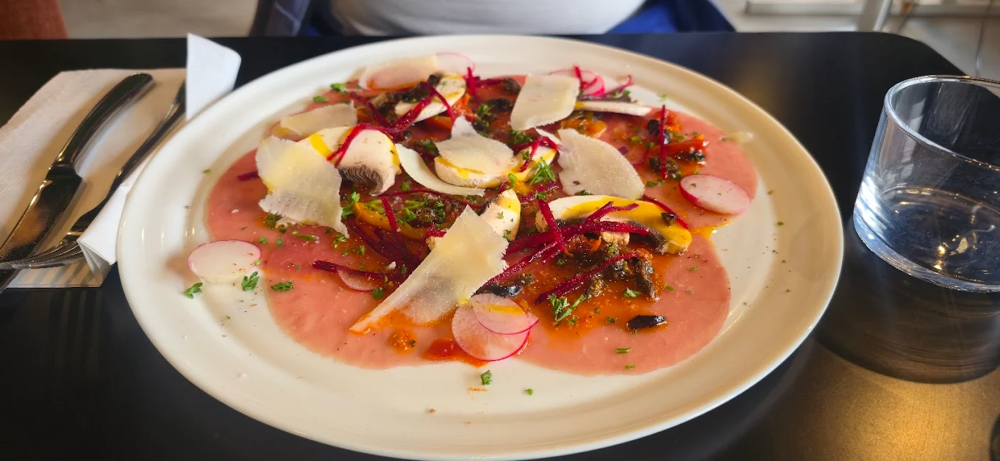
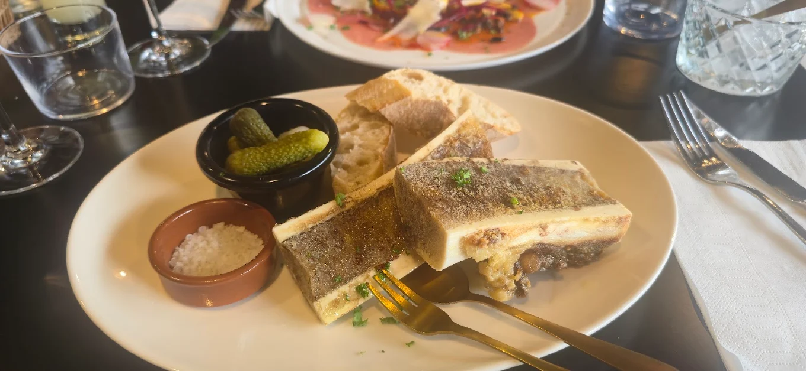
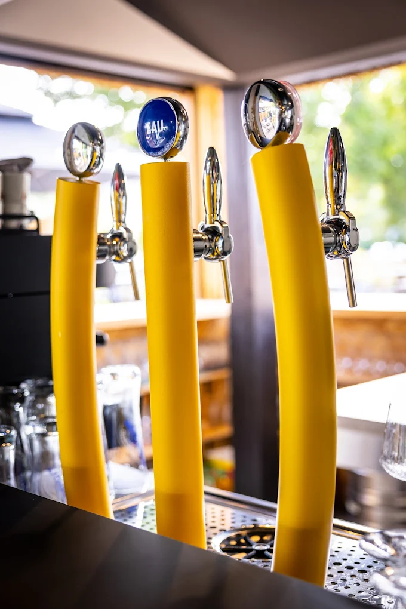
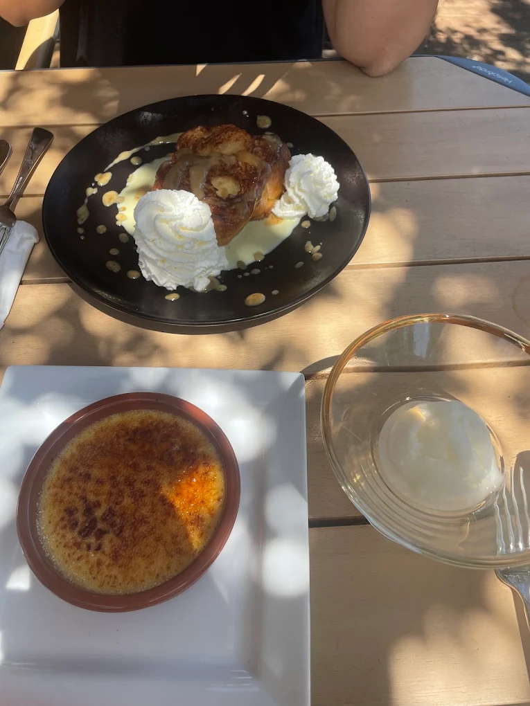

Le Cadre
Notre établissement nature
Situé au 540 chemin de Bimbo, Les Tables de la Fontaine profite d’un cadre calme et naturel, parfait pour savourer un repas ou boire un verre dans une ambiance détendue.
- Terrasse ombragée sous les pins
- Cadre verdoyant et apaisant
- Ambiance pure vacances landaises
- Proximité avec le lac de Biscarrosse
- Déjeuner au calme ou dîner festif
- Apéritif & cocktails entre amis

100%
Nature & Plein air


Galerie
L'ambiance en images
Découvrez le cadre, nos plats signatures et l'ambiance conviviale des Tables de la Fontaine.





